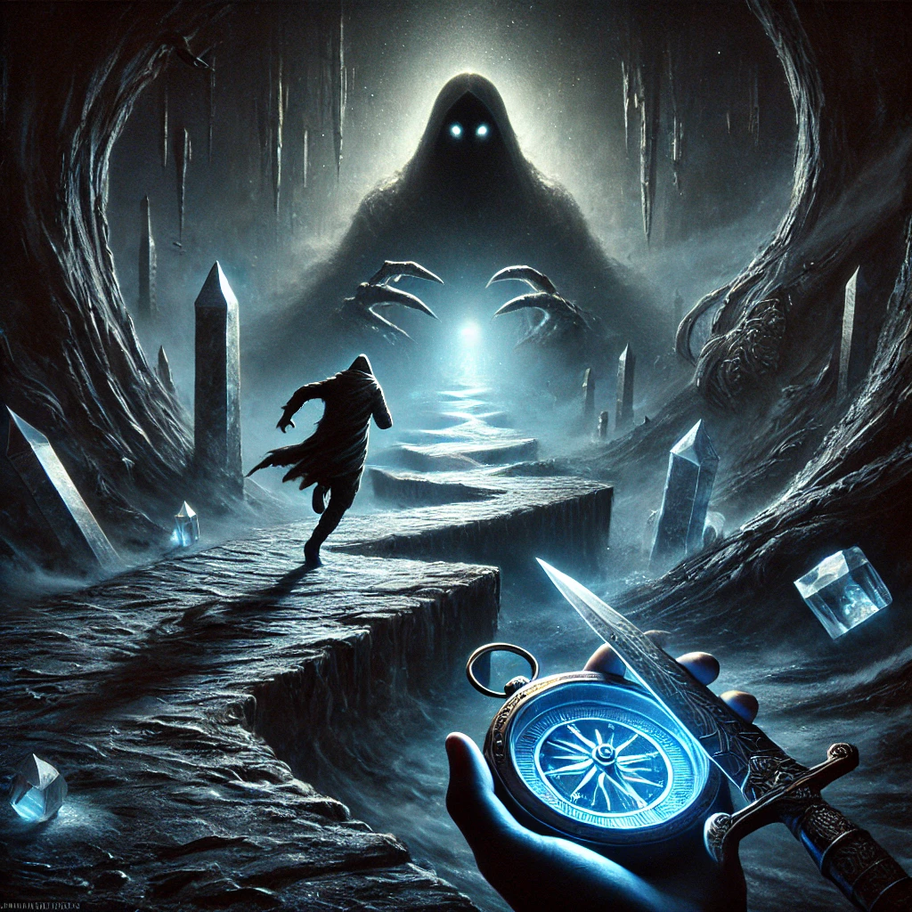

Overwhelmed by the towering shadow and its piercing gaze, you feel panic rising within you. Clutching the compass and dagger, you turn and run. The ground beneath you shifts and twists, as though the darkness itself is chasing you.
The air grows colder, and the sound of your heartbeat thunders in your ears. The shadow’s voice echoes behind you, a mix of sorrow and anger:
“You cannot outrun what is within you. The more you flee, the stronger I become.”

As you run, you come across a fork in the path. The compass pulses faintly, as if urging you to choose a direction: